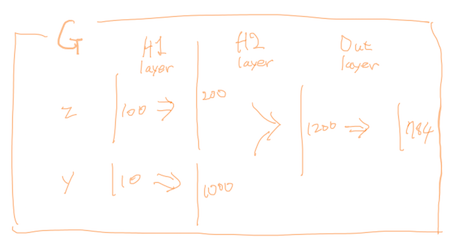
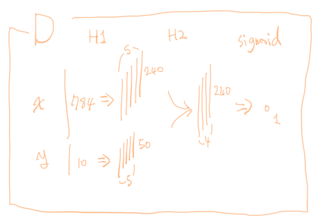
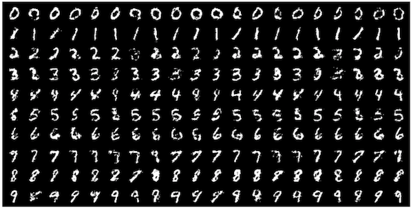
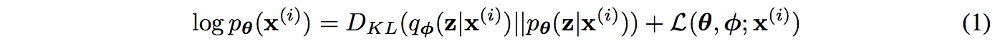
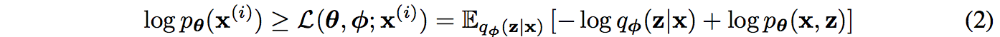
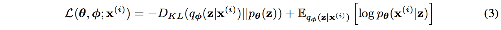
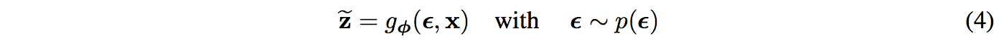
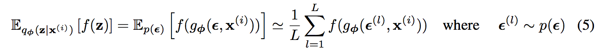
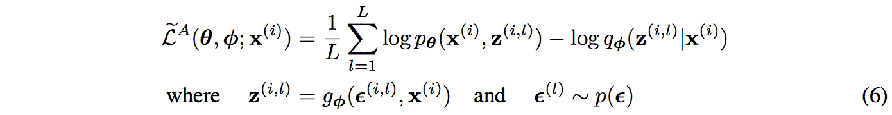
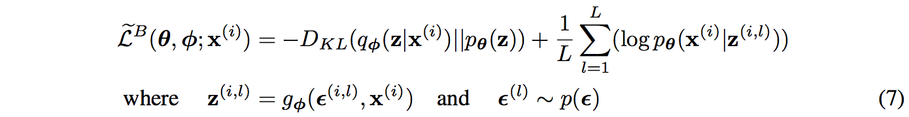

#
Generative Models
#
개론
- GAN과 VAE 비교
#
GAN
최윤제님 정리 자료
- 원본: https://www.youtube.com/watch?v=uQT464Ms6y8
- 네이버 버전: https://www.youtube.com/watch?v=odpjk7_tGY0
- 슬라이드: https://www.slideshare.net/NaverEngineering/1-gangenerative-adversarial-network
AtoZ:
GAN tutorial
- 2016 한글 정리: https://kakalabblog.wordpress.com/2017/07/27/gan-tutorial-2016/
- 2017: https://nips.cc/Conferences/2016/Schedule?showEvent=6202
블로그
- 컨셉과 원리: http://learnai.tistory.com/
- 구현: http://jaynewho.com/post/2
- 라온피플 자료: http://laonple.blog.me/221190581073
#
DCGAN
DCGAN 논문 리뷰 한글:
- http://laonple.blog.me/221201915691
- http://artoria.us/19
- https://jaejunyoo.blogspot.com/2017/02/deep-convolutional-gan-dcgan-1.html
- 소개 동영상: https://www.youtube.com/watch?v=7btUjE2y4NA
- https://kakalabblog.wordpress.com/2017/06/04/unsupervised-representation-learning-with-dcgan-2016-%EB%85%BC%EB%AC%B8-%EB%A6%AC%EB%B7%B0/
- 독창적인 소개: https://dev-strender.github.io/articles/2017-07/decan-introduction
참조하기 좋은 자료들
- http://www.khshim.com/archives/218
- https://kakalabblog.wordpress.com/2017/06/10/gandcgan-%EB%A6%AC%EB%B7%B0-%EB%B0%9C%ED%91%9C/
#
cGAN
#
Introduction
- GAN
- 주목받는 이유
- 까다로운 확률 계산을 approximating하는 것은 어려운데, 이것을 회피할 수 있는 generative model 학습 framework가 대안으로 뜨고 있다.
- 장점
- Markov chain도 필요없고
- gradient를 얻기 위해 backprop만 사용되고
- 학습 과정에서 inference도 필요없고
- 다양한 factor와 interation을 모델에 쉽게 포함시킬 수 있고
- S.O.T.A log-likelihood estimate와 진짜같은 sample을 만들 수 있다.
- 주목받는 이유
- cGAN의 특징
- 기존 GAN과는 달리 추가적인 정보를 사용하여 data generation process를 제어하는 것이 가능함
- 이러한 conditioning은 아래와 같은 것들이 될 수 있다.
- class label
- some part of data for inpainting (inpainting, 참고논문 Fig. 3)
- data from different modality
- 이 논문에서는 두 가지 데이터셋으로 실험을 진행했다.
- MNIST: condition이 class label
- MIR Flickr: condition이 multi-modal 정보
#
Related Work
기존 supervised neural networks의 2가지 challenge
- 아주 많은 수의 output category를 예측하는 모델로의 확장이 어렵다.
- 해결책: 다른 modality의 정보를 활용한다. (참고논문 Fig. 1)
- => prediction error라도 ground truth에 가까울 수 있고(e.g. table 대신 chair를 예측),
- => 학습 과정에서 unseen인 label에까지 generalized prediction이 가능하다
- input에서 output으로의 매핑이 one-to-one mapping을 학습하는데 많은 연구가 집중되어 있지만, 많은 실제 문제들은 probabilistic one-to-many mapping이다. (e.g. 이미지 하나에 대해 다양한 태깅이 존재할 수 있음)
- 해결책: conditional probabilistic generative model을 사용한다.
- => multi-modal Deep Boltzmann Machine을 학습하는 방법 (cGAN 방법론과 유사한 접근법)
- => multi-modal neural language model 학습해서 이미지에 대한 다양한(= one-to-many) description을 생성
#
Conditional Adversarial Nets
generator와 discriminator에 추가적인 정보 y로 condition을 주면 GAN을 conditional model로 확장할 수 있다.
- Generator: input noise p(z)와 y가 joint hidden representation으로 결합된다. (참고로 adversarial training framework는 hidden representation을 구성하는 방식에 상당한 유연성을 제공한다. 반면 전통적인 generative framework에서는 이게 엄청 어려웠음)
- Discriminator: x와 y가 입력으로 discriminator function에 제공된다.
- Objective function:
![alt text]image1 - Structure:
![alt text]image2
{kind=link}
{kind=link}
#
Experimental Results
#
1) Unimodal (MNIST)
- conditional adversarial net on MNIST images:
- (one-hot vector로 인코딩된) class labels로 conditioned된 MNIST 이미지로 conditional adversarial net을 학습함.
- Generator 구현부 설명
- 100차원 unit hypercube에서 uniform distribution으로부터 z 추출함.
- z와 y는 각각 size 200, 1000 짜리 hidden layer(w/ ReLU)로 매핑됨. 그러고나서 양쪽 모두 size 1200짜리 두 번째 combined hidden ReLU 레이어로 매핑됨.
- 마지막으로 784 차원의 MNIST 샘플을 output으로 생성하는 sigmoid unit layer가 있음.
- 
- Discriminator 구현부 설명
- x, y를 maxout layer(각각 240/5, 50/5)로 매핑한다.
- 두 hidden layer는 joint maxout layer(240/4)로 매핑된 후 sigmoid layer로 들어간다.
- discriminator의 아키텍쳐는 충분한 capacity만 있다면 별로 중요하지 않고, maxout이 이 task에 궁합이 좋다.
- 
- mini-batch size: 100
- learning rate: 0.1 -> 0.000001
- momentum: 0.5 -> 0.7
- dropout keepprob: 0.5
- stopping point: best estimate of log-likelihood on the validation set
- 성능 평가 결과
- 
- Gaussian Parzen window log-likelihood estimate로 성능 평가
- Parzen window distribution을 사용해서 test set의 log-likelihood를 추정했다.(참고 논문 5장)
- 막상 결과를 수치로 따져보면 다른 모델이 좀 더 낫다. 근데 우리 모델은 그냥 PoC라서 그런것이고 좀 더 고도화하면 나아질 것이다.
#
2) Multimodal (Flickr)
- UGM(user-generated metadata)
- Flickr같은 사진 사이트에는 labeled data가 많다. (e.g. 사진에 연관된 사용자 태그들)
- UGM은 canonical image labelling schems랑은 많이 달라서 좀 더 descriptive하다
- UGM은 사람마다 다른 단어를 이용해서 같은 컨셉을 기술하기 때문에 동의어가 많다. 고로 이런 labels를 잘 normalize하는 방법이 중요하다. => word embedding을 사용한다.
- 자동화된 이미지 태깅
- 이미지 feature로 condition된 tag-vector의 분포를 생성하기 위해 conditional adversarial nets를 사용
- feature
- image representation: ImageNet으로 pre-train된 network에서 마지막 FC layer의 4096 차원 output을 image representation으로 사용
- word representation: YFCC100M으로 skip-gram model을 학습하여 word representation으로 사용
- 샘플 생성 방법:
- image feature vector를 condition으로 사용하여 word feature vector를 생성한다.
- 해당 word representation과 cosine 유사도가 높은 word들을 선별
- 개중에 10개의 most common words를 선택해서 evaluation에 사용함.
- 자세한 내용은 논문을 참조
#
연관된 연구들 (참고 이미지)
cGAN은 아래 연구들로 발전된다.
- generative adversarial text to image synthesis
![alt text]image6 - pix2pix: Image-to-Image Translation with Conditional Adversarial Networks
![alt text]image7
{kind=link}
{kind=link}
#
같이 보면 좋은 자료
- 김승일 소장님 발표: https://www.youtube.com/watch?v=iCgT8G4PkqI
- cgan 정리 블로그:
#
InfoGAN
- 참고자료
#
Auto-Encoding Variational Bayes
문제제기: continuous latent variables을 가진 intractable posterior distribution과 large datasets가 있을 때 어떻게 directed probabilistic model에서 효율적인 inference and learning을 수행할 수 있을까?
제안하는것: stochastic variational inference and learning algorithm
- large datasets로 확장 가능
- mild differentiability conditions하에서
- intractable case에서도 잘 동작
contribution:
- variational lower bound를 reparameterization하여 standard SGD로 최적화할 수 있는 lower bound estimator를 산출한다.
- datapoint마다 continuous latent variable이 있는 i.i.d. dataset에 대해, lower bound estimator를 사용해서 approximate inference model(= recognition model)을 intractable posterior에 fitting함으로써 posterior inference를 효율적으로 만들 수 있다.
graphical model, expectation maximization, variational inference, (TODO: 내용 추가)
#
1 Introduction
- 어떻게 하면 directed probabilistic models에 대한 효율적인 approximate inference and learning을 수행할 수 있을까? (이 모델의 continuous latent variables와 parameters는 intractable posterior distributions를 가진다) (TODO: 가우시안 믹스쳐 그림 추가 (잠재변수, 그래피컬 모델))
- Variational Bayesian approach: intractable posterior에 대한 approximation을 최적화함
- 안타깝지만 common mean-field 접근법은 approximate posterior에 대한 기대값의 analytical solution을 필요로 하며, 보통은 이것도 intractable한 경우가 많다. (TODO: PRML에서 closed form이 아닌것들 보여주는 부분 설명 추가)
- variational lower bound의 reparameterization이 어떻게 lower bound의 미분가능한 unbiased estimator를 산출하는지 보인다.
- 이 SGVB(Stochastic Gradient Variational Bayes) estimator는 continuous latent variables and/or parameters를 가진 거의 모든 모델에서 효율적인 approximate posterior inference를 위해 사용될 수 있다.
- 이 estimator는 standard stochastic gradient ascent 테크닉을 사용해서 간단하게 최적화할 수 있다.
- AEVB(Auto-Encoding Variational Bayes) 알고리즘을 제안한다.
- i.i.d. dataset이며 datapoint마다 continuous latent variable 가진 데이터셋에 적용
- recognition model을 최적화하기 위해 SGVB estimator를 사용함으로써 AEVB는 inference and learning을 효율적으로 만든다.
- recognition model은
- 간단한 ancestral sampling을 사용하여 approximate posterior inference를 효율적으로 수행하게 해준다. (ancestral sampling: 그래피컬 모델이 주어졌을 때 부모 노드에서 자식노드로 이동하는 형태로 샘플링해서 얻은 결합확률로부터 하나의 샘플 (x_1, x_2, ..., x_K)를 얻는 방법)
- 고로 MCMC 같은 값비싼 iterative inference 기법을 적용하지 않고도 효과적으로 모델 parameter를 학습할 수 있게 해준다.
- recognition model은
- 학습된 approximate posterior inference model은 recognition, denoising, representation, visualization 같은 다수의 task에 사용될 수 있다.
- recognition model에 neural network를 사용한게 바로 VAE이다.
#
2 Method
여기서 사용하는 전략은 continuous latent variables를 가진 다양한 directed graphical model에서 lower bound estimator(stochastic objective function)를 유도하는데 사용될 수 있다.
다음과 같은 common case로 제한한다.
- i.i.d. dataset with latent variables per datapoint
- parameter에 대해 maximum likelihood(ML) or maximum a posteriori(MAP) inference 수행
- latent variables에 대해 variational inference 수행
이 방법론은 streaming data같은 online, non-stationary setting에 적용될 수 있지만 이 논문에서는 단순함을 위해 fixed dataset을 가정한다.
#
2.1 Problem scenario
- 문제: marginal or posterior probability에 대한 간략화 가정을 하지 않는다. 역으로 아래 경우에도 효율적으로 동작하는 일반적인 알고리즘에 관심이 있다.
- Intractability: 아래와 같은 intractability들은 꽤 흔하며, 복잡한 likelihood function
의 경우에 나타난다. (e.g. a neural network with a nonlinear hidden layer)
- marginal likelihood의 적분
가 intractable: marginal likelihood를 미분하거나 계산할 수 없다.
- true posterior density
가 intractable: EM 알고리즘을 사용할 수 없다.
- mean-field VB 알고리즘을 위해 필요한 적분이 intractable
- marginal likelihood의 적분
- A large dataset: 데이터가 많아서 batch optimization이 너무 비싼 경우 minibatch나 single datapoint로 파라미터를 업데이트 하고싶다.
- Monte Carlo EM같은 샘플링 기반 솔루션은 datapoint 마다 expensive sampling loop가 필요하므로 너무 느리다.
- Intractability: 아래와 같은 intractability들은 꽤 흔하며, 복잡한 likelihood function
- 솔루션:
- Efficient approximate ML or MAP estimation for the parameters theta: 파라미터 자체로 관심의 대상이 될 수 있다. 실제 데이터를 닮은 artificial data 생성 같은 일들을 가능하게 해준다. -> p(x|z)
- Efficient approximate posterior inference of the latent variable z given an observed value x for a choice of parameters θ: coding이나 data representation task에 유용하다. -> p(z|x)
- Efficient approximate marginal inference of the variable x: x에 대한 prior가 필요한 모든 종류의 inference task를 가능하게 해준다. 이미지 denoising, inpainting, super-resolution 같은 것들. -> p(x)
- 위 문제들을 해결하기 위해 recognition model
를 도입해보자.
- 얘는 intractable true posterior
의 approximation이다.
- mean-field variational inference에서 posterior를 approixmate하는 것과는 반대로, 이것은 factorial일 필요도 없고 parameter phi가 closed-form expectation으로부터 계산되지도 않는다.
- 대신에 recognition model parameter
를 generative model parameter
와 jointly 학습하는 방법을 소개할 것이다.
- 얘는 intractable true posterior
- coding theory 관점에서 unobserved variables z는 latent representation 또는 code로 생각할 수 있다. 그러므로...
- recognition model
- recognition model
#
중간정리
- 그러니까 정리해보면, 우리가 궁극적으로 구하려고 하는 것은...
- observed variable x는 unknown underlying process로 부터의 random sample이라고 가정한다. 이 underlying process의 true distribution
은 unkown이기 때문에 우리는 이 underlying process를 모델
로 approximate 하려는 것이다.
이러한 parameter theta의 값을 찾는 과정이 바로 learning이다.
- observed variable x는 unknown underlying process로 부터의 random sample이라고 가정한다. 이 underlying process의 true distribution
- 만약 fully observed model 상황이라면?
- directed graphical model의 모든 variable들이 데이터에서 observed 된다면 그냥 straightforward optimazation하면 된다.
- 보통은 maximum likelihood 방법을 사용하며, maximum likelihood ciriterion은
이다. 이 objective의 gradient를 구해서 hill-climb 방식으로 iterative하게 local optimum을 찾아간다.
- all datapoints: batch gradient descent
- minibatche data: stochastic gradient descent
- latent variable model 상황이라면?
- latent variable은 모델에서 사용되는 variable이지만 dataset에서는 관측할 수는 없기 때문에 latent variable이라고 말한다.
- latent variable을 사용하는 이해하기 쉬운 사례로는 가우시안 혼합 모델이 있음.
- 원래 식 (9.7)이 있지만 잠재변수를 사용하면 복잡한 혼합 모델 p(x) 대신 비교적 간단한 p(x,z)의 marginalization
으로 p(x)를 나타낼 수 있다. 이러면 조건부 확률을 사용할 수 있으므로 EM 알고리즘도 사용 가능하게 된다.
- 샘플을 생성하기 위해 우선 p(z) 분포에서 z 값을 생성하고 차례로 ancestral sampling을 수행한다. 이렇게 joint distribution p(x,z) = p(x|z)p(z)를 사용해 생성한 샘플 예제는 그림 (a)에서 확인할 수 있다.
- 사족으로, 해당 문서 아래쪽에서 단순히 log-likelihood function 미분해서 파라미터를 구할 수 없는 경우(closed-form이 아니기 때문)를 봐두면 나중에 참고가 된다.
- 원래 식 (9.7)이 있지만 잠재변수를 사용하면 복잡한 혼합 모델 p(x) 대신 비교적 간단한 p(x,z)의 marginalization
- latent variable을 도입하면 이 directed graphical model은 joint distribution p_theta(x,z)
- 그러면 위 식을 이용해서 maximum likelihood를 계산하면 될까?
- 하지만 모두 다 intractable해서 계산할 수가 없다.
- 그래서 parametric inference model q_\phi(z|x) 도입
- variational inference : General family of methods for approximating complicated densities by a simpler class of densities
- variational parameter phi가
요렇게 되도록 optimize한다.
- distribution q_\phi(z|x)를 neural network로 parameterize하면 아래와 같이 표현할 수 있다.
- 여기까지의 의식의 흐름은 다음과 같다. 궁극적으로 알고 싶은건 p*(x)를 근사하는 pθ(x)를 최대화하는 θ를 찾고 싶은건데 p(x)를 바로 알기는 어려우니 z 도입. 즉 pθ(x,z)를 알고 싶다는 얘기. p(x,z)는 prior*decoder 즉 p(z)p(x|z)인데 아무 z~p(z)나 넣으면 샘플 생성이 잘 안되더라. 그래서 샘플 생성을 잘 하는 z를 p(z|x)로 구하면 어떨까? 이게 인코더. 인코더에서 posterior pθ(z|x)를 구해야 하는데 이게 intractable이라서 이걸 qφ(z|x)로 approximate한다.
![alt text]image_vae101
{kind=link}
#
2.2 The variational bound
- marginal likelihood는 개별 datapoint들의 marginal likelihood의 합으로 구성된다. 즉
이며, 각 likelihood 식은 아래와 같이 전개된다.
- 
- 수식 전개는 활석님 자료의 VAE 7 page 참고
- first RHS term: approximate와 true posterior의 KL divergence
- second RHS term: datapoint i의 marginal likelihood에 대한 (variational) lower bound라고도 하며, 베이지안에서 marginal likelihood를 model evidence라고 하므로 evidence lower bound(ELBO)라고도 한다.
- 고로 식 (1)은 아래와 같이 다시 쓸 수 있는데
- 
- 이렇게 하는 이유는 앞에서 봤듯이 pθ(x)에 직접 maximum likelihood를 적용할 수 없기 때문에 ELBO를 최대화 할것이다. L을 최대화하면 maximum likelihood도 최대화되겠지.
- 수식 전개는 pr12-vae의 ELBO - eq(2) 부분 참고
- 식 (2)를 다시 쓰면 아래와 같다.
- 
- 수식 전개는 활석님 자료의 VAE 8 page 참고
- ELBO를 최대화하는 것은 2 가지를 측면을 동시에 optimize한다.
- pθ(x) 최대화: generative model이 점점 더 좋아진다.
- KL divergence 최소화: qφ(z|x)를 우리가 잘 다룰 수 있는 tractable한 분포(ex. gaussian) pθ(z)와 비슷하게 만든다.
- Decomposition of log-likelihood 참고참고
- 이제 ELBO를 두 파라미터(variational parameter φ와 generative parameter θ)에 대해 미분하고 최적화해보자. (kingma thesis 18 page 참고)
- ∇θELBO: simple.
- ∇φELBO: problematic. 이런 문제를 위한 monte carlo gradient estimator는 샘플링 때문에 high variance가 나타나며 impractical하다. -> reparameterization trick이 필요하다.
#
2.3 The SGVB estimator and AEVB algorithm (잘 모름)
여기서는 approximate posterior가 qφ(z|x) 형태인데 위에서 살펴본 monte carlo gradient estimator는 x로 conditioned되지 않는 qφ(z)의 경우만에 적용될 수 있다는 점에 유의하라.
- 특정한 mild condition을 가정하면 approximate posterior qφ(z|x)를 위해서 미분 가능한 transformation gφ(e, x)를 사용하여 random variable
를 reparameterizate할 수 있다. 여기서 e는 (auxiliary) noise variable.
- 수식으로 나타내면 다음과 같다.
- 
- 이렇게 하면 이제 어떤 function f(z)의 expectation의 qφ(z|x)에 대한 monte carlo estimate를 아래와 같이 수행할 수 있다.
- 
- 이 테크닉을 수식 (2)에 적용하면 아래와 같이 generic Stochastic Gradient Variational Bayes(SBVB) estimator를 얻을 수 있다.
- 
- 이 테크닉을 수식 (3)에 적용하면 KL-divergence term 말고 expected reconstruction error term만 sampling으로 estimation하면 된다. 이때 KL-divergence term은 φ를 regularizing한다고 해석할 수 있다. 즉, approximate posterior qφ(z|x)를 pθ(z)에 가깝게 만든다.
- 여기서 식 (3)에 해당하는 두 번째 버전의 SGVB estimator가 아래와 같이 나온다. 보통은 이게 앞에서 본 generic estimator 보다 작은 variance를 갖는다.
- 
- 정리하면... 활석님 자료의 VAE 11 page 참고
#
2.4 The reparameterization trick
- continuous latent variable과 미분가능하 encoder와 generative model이 있을 때, change of variables를 통해 ELBO는 θ와 φ에 대해 straightforward하게 미분가능해질 수 있다.
- kingma thesis Figure 2.3 참고
#
함께 보면 좋은 자료
- VAE 논문: https://arxiv.org/pdf/1312.6114.pdf
- 킹마형 Thesis: https://pure.uva.nl/ws/files/17891313/Thesis.pdf
- VAE tutorial: https://arxiv.org/abs/1606.05908
- 직관이 좋은 슬라이드 자료: https://www.slideshare.net/ssuser06e0c5/variational-autoencoder-76552518
- 동전 던지기로 설명: http://www.openias.org/variational-coin-toss
- EM 관련: https://www.youtube.com/watch?v=MBr47eM4hf0
- GMM 관련: https://www.youtube.com/watch?v=JNlEIEwe-Cg
- Bloomberg (EM for Latent): https://www.youtube.com/watch?v=lMShR1vjbUo
- CS231N (Generative Models): https://www.youtube.com/watch?v=5WoItGTWV54
#
WaveGAN
- PR12 발표 동영상: https://www.youtube.com/watch?v=UXVKSSXdwb8
- 구현: https://github.com/chrisdonahue/wavegan/
#
WGAN
Wasserstein distance
Lipschitz Continuity
- 연속성의 종류: http://mathnmath.tistory.com/42
- 갑자기 왜 Lipschitz continuity가 나온걸까? convex optimization 때문: http://sanghyukchun.github.io/63/
Kantorovich-Rubinstein Duality
#
SNGAN
논문 설명
- http://jaejunyoo.blogspot.com/2018/05/paper-skim-spectral-normalization-for-gan.html
- http://keunwoochoi.blogspot.com/2018/01/spectral-normalization-for-generative.html
- https://www.youtube.com/watch?v=iXSYqohGQhM
matrix norm 관련
- wikipedia: https://en.wikipedia.org/wiki/Matrix_norm#Special_Cases
- https://www.math.uh.edu/~jingqiu/math4364/iterative_linear_system.pdf
- https://www.youtube.com/watch?v=UtNPmGw60jg
- https://www.youtube.com/watch?v=WPMY_ufrmzI
- https://www.youtube.com/watch?v=pgJ2Sg1jcYQ
Lipschitz 관련
- http://sanghyukchun.github.io/63/
- http://users.ece.utexas.edu/~cmcaram/EE381V_2012F/Lecture_4_Scribe_Notes.final.pdf
- 동영상
- https://www.youtube.com/watch?v=Cnc83B3C2pY
- https://www.youtube.com/watch?v=_MKhnZ_n3PY
- https://www.youtube.com/watch?v=yzRDBw1bSV0
- https://www.youtube.com/watch?v=sv1R8gualO8
- https://www.youtube.com/watch?v=5VK5-KfYXDI
- https://www.youtube.com/watch?v=GMiOPeqAwlw
- https://www.youtube.com/watch?v=VpYyGfs0SdA
- https://www.youtube.com/watch?v=pI9faLfYrH8
#
CS236
#
1. Autoregressive Models
- NADE: The Neural Autoregressive Distribution Estimator (http://proceedings.mlr.press/v15/larochelle11a/larochelle11a.pdf)
- RNADE: The real-valued neural autoregressive density-estimator (https://arxiv.org/abs/1306.0186)
- MADE: Masked Autoencoder for Distribution Estimation (https://arxiv.org/abs/1502.03509)
- Pixel Recurrent Neural Networks (https://arxiv.org/abs/1601.06759)
- Conditional Image Generation with PixelCNN Decoders (https://arxiv.org/abs/1606.05328)
- PixelCNN++: Improving the PixelCNN with Discretized Logistic Mixture Likelihood and Other Modifications (https://arxiv.org/abs/1701.05517)
- WaveNet: A Generative Model for Raw Audio (https://arxiv.org/abs/1609.03499)
#
2. Variational Autoencoders
#
3. Normalizing Flow Models
- Real NVP 저자 직강: https://www.youtube.com/watch?v=7hKul_tOfsI
- 수학
- Change-of-Variable Technique: https://newonlinecourses.science.psu.edu/stat414/node/157/
- Jacobian determinant: http://www.math.ucla.edu/~archristian/teaching/32b-sum18/session-4.pdf
- Khan Academy : 행렬식과 평행사변형의 영역, Derivatives of multivariable functions
- matrix determinant lemma
- 튜토리얼
- 겁나 정리 잘한 블로그
- 강의안이 그림 캡쳐한 블로그 글 1, 글 2
- tensorflow bijector API 사용법 소개글